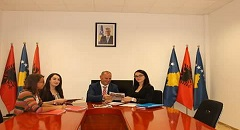
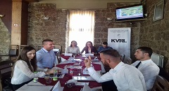
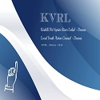

-
Takimet
Takim me kryetarin Ramiz Lladrovci
Kryetari i Komunës, z.Ramiz Lladrovci dhe Drejtoresha për Kulturë, Rini dhe Sport, znj.Flutura Avdiu, pranuan nga KVRL, revistën e qytetit "Realiteti",revistë kjo e punuar nga anëtarët e KVRL-së.Poashtu në këtë takim u dërgua edhe raporti financiar i subvencioneve, me c'rast Kryetari Lladrovci e përgëzoi KVRL-në për transparencën dhe inkurajoi të vazhdohet të punohet me këtë ritëm.
-
Takimet
"Rinia në partitë politike"
KVRL, sot organizoi një debat me temën "Rinia në partitë politike" me panelistë asambleistët e Kuvendit Komunal.Pavarësisht që të ftuar ishin shumica e asambleistëve, pjesëmarrës ishin asambleistët; z.Vehbi Berisha,z.Haxhi Xhemajli,znj.Florentina Elezi, poashtu edhe përfaqësuesit e forumeve rinore të partive politike.KVRL është apartiake, nuk kemi synime politike, i vetmi synim i KVRL-së është fuqizimi i rinisë.
Rreth KVRL/LYAC !
KVRL/LYAC
Keshilli i Veprimit Rinor Lokal - Drenas eshte organi me i lart i perfaqsimit te rinis para institucioneve vendimarrse komunale.
Këshilli i veprimit rinorë lokal (KVRL) është themeluar me Ligjin për fuqizim dhe pjesëmarrje të rinisë (Ligji Nr. 03/L-145) i cili është miratuar nga Parlamenti i Republikës së Kosovës në vitin 2009. Në vitin 2010 në përputhje me Ligjin Nr. 03/L-145 Ministria e Kulturës Rinisë dhe Sportit ka nxjerr Udhëzimin Administartiv (Nr. 9/2010) me të cilin përcaktohen kompetencat dhe përgjegjësitë e KVRL-së.
Aktivitetet se fundmi
-
Kryetarja e KVRL-së, Altina Nika, me datën 09.08.2017 ka marrë pjesë në takimin e organizuar ne Mitrovicë nga OSBE dhe IAP.Ky takim kishte për qëllim promovimin e të drejtave të njeriut dhe platformës "Njih të drejtat tua". Njëkohësisht u bisedua për rolin dhe kompetencat e Avokatit të Popullit.
-
Turniri i Shahut- Java e rinisë së Drenasit! Aktivitetet gjate javes se rinis se drenasit skan te ndalur ,pos ne fusha te tjera ne te cilat u organizuan aktivitete ,edhe loja e shahut eshte perfshire si nje loje atraktive per te rinjet .
-

Feugiatrutrum rhoncus semper enim massa eu intesque ipsum velit orci dolorem. Atnatis dolor tincidunt nulla elit auctortis laculisi elit fauctortor natis loreet.
-
Feugiatrutrum rhoncus semper enim massa eu intesque ipsum velit orci dolorem. Atnatis dolor tincidunt nulla elit auctortis laculisi elit fauctortor natis loreet.
-
Feugiatrutrum rhoncus semper enim massa eu intesque ipsum velit orci dolorem. Atnatis dolor tincidunt nulla elit auctortis laculisi elit fauctortor natis loreet.